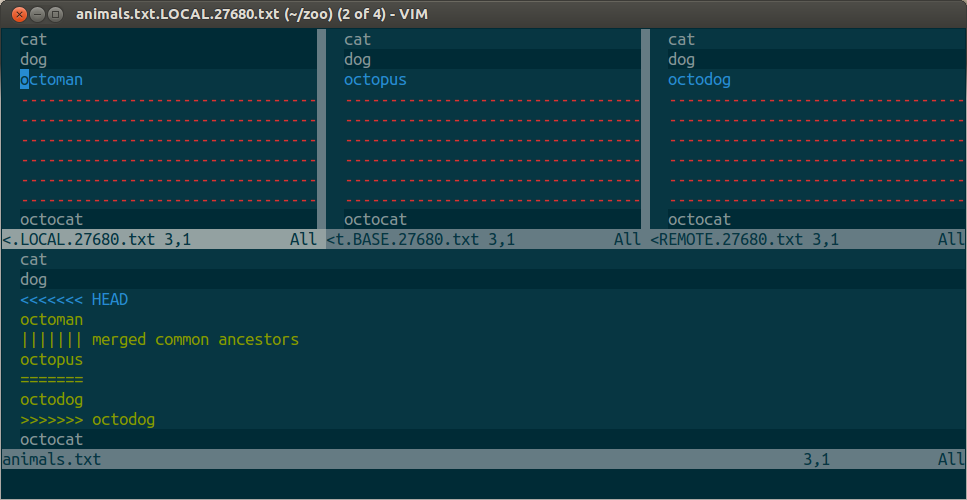

Git 高级技巧
1. Git 的基本设置
$ git config --global user.name "Huayi Wei"
$ git config --global user.email "weihuayi@xtu.edu.cn"
$ git config --global core.editor vim
$ git config --global merge.tool vimdiff
$ git config --global merge.conflictstyle diff3
$ git config --global difftool.prompt false
上面的配置都会保存到用户家目录下的 .gitconfig 文件.
2. 共享版本开发流程
2.1 增加合作者
2.2 开发流程
- 开始工作时
$ git pull # 把服务器最新的修改拉回本地，如果能自动合并，git 会自动合并，弹出 commit # 编辑器，输入注释; 如果不能自动合并，请先在本地解决冲突。 - 修改后
$ git status # 检查修改状态 $ git add . # 添加修改 $ git commit # 添加修改注释 $ git pull # 再次检查服务器是否有更新 - 推送到服务器仓库
$ git push
2.3 合并冲突

:diffg RE " get from REMOTE
:diffg BA " get from BASE
:diffg LO " get from LOCAL
可以加入一个 Hook, 在 Merge 成功后, 删除一些备份文件, 如
*.orig
*_REMOTE_*
*_BASE_*
*_LOCAL_*
http://www.rosipov.com/blog/use-vimdiff-as-git-mergetool/
3. Pull and Request 开发流程
4. Git Hooks
当 Git 中一些重要的动作(commit, push, merge 等) 发生时, Hooks 提供一种执行脚本的方法.
共有两种 Hooks :
- 客户端 Hook
- 服务器端 Hook
5. 统计仓库当前代码行数
$ git ls-files | xargs wc -l
Git hooks 就是一些可执行的脚本。在一些事件的前后（如 commit，push，和 receive）可以被 Git 调用执行完成一些任务。
这些脚本仅仅被开发者的想像力所限制。
- 切换到master分支 git checkout master
- 更新master代码 git pull --ff-only upstream master
- 创建新的分支，并在新的分支上进行开发 git checkout -b "newbranch"
- 开发完成后，将修改的文件加入到github git add file
- 提交修改的文件 git commit -m “注释”
- 将正在开发的分支提交到远端代码库 git push origin newbranch
- 在github上发起pull request 分支合并后在本地执行第2步
- 从发生冲突的分支(如:modifypwd)切换到本地master分支 git checkout master
- 从主版本pull最新代码 git pull --ff-only upstream master
- 切换到发生冲突的分支 git checkout modifypwd
- rebase，提示发生conflict的文件 git rebase master
- 修改文件冲突的文件 vim file
- 对比修改后的文件(可以忽略) git diff file
- 加入文件到索引 git add file
- 继续rebase git rebase --continue
- 如何提示还有冲突的文件则跳转到第5步执行强制push当前分支 git push origin modifypwd -f
Pull request流程
git checkout -b fanwangwang-master master git pull https://github.com/fanwangwang/fem.git master git checkout master git merge --no-ff fanwangwang-master git push origin master
共享版本流程
http://www.worldhello.net/gotgithub/04-work-with-others/020-shared-repo.html
版本控制是一种记录一个或若干文件内容变化，以便将来查阅特定版本修订情况的系统
- 直接记录快照，而非差异比较
- 所有的操作都是本地执行
- Git保持完整性
- 以文件哈希值索引，而不是文件名
- Git 一般只添加数据